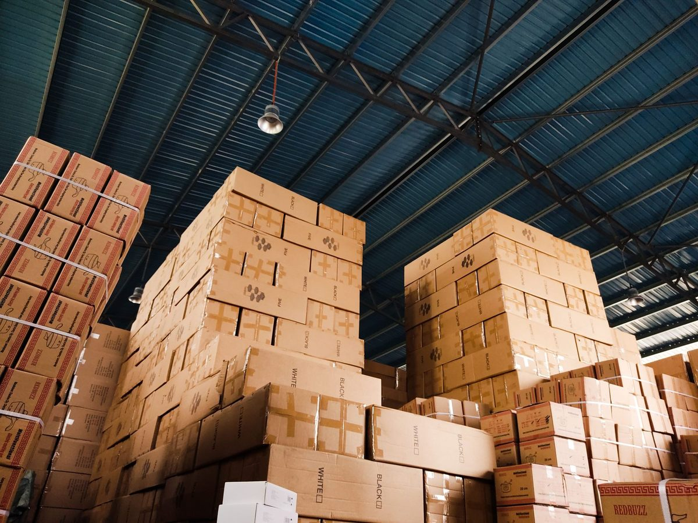

What Is a Contents Pack-Out?
A contents pack-out means inventorying, packing and moving your belongings out of a damaged Plano home so they can be cleaned, stored safely and returned once repairs are complete. See water mitigation.
Why It MattersWhy Contents Pack-Out Matters
During a water or fire loss, furniture and belongings are at risk two ways: from the damage itself, and from sitting in the way of drying and repairs.
A professional pack-out:
- Moves items out of harm's way before they absorb more water, soot or odor
- Clears space so floors and walls can be dried or rebuilt
- Creates an inventory your insurance company can use
- Gets salvageable items cleaned instead of thrown away
- Keeps everything secure until your home is ready
How Our Pack-Out Works
Room-by-Room Inventory
Every item is photographed and recorded by room before it's moved. Boxes are labeled so you know exactly what's where.
Sorting
Items are sorted into three groups: unaffected, restorable and non-salvageable.
Careful Packing and Transport
Furniture is wrapped and padded. Fragile items, artwork and electronics are packed separately.
Cleaning and Restoration
Restorable items are cleaned, dried and deodorized using methods matched to each material.
Secure Storage
Belongings are kept in secure, climate-controlled storage while your home is restored.
Pack-Back and Reset
When repairs are finished, everything is delivered back and placed room by room.

Preventing Furniture Damage on Wet Floors
Even if you don't need a full pack-out, furniture sitting on wet carpet can cause problems quickly:
- Metal legs and casters leave rust stains on carpet
- Wood furniture legs absorb water and swell or split
- Dyes from furniture can bleed into wet carpet
We block and pad furniture on site or move it out of affected rooms during drying.
Specialized CleaningSpecialized Cleaning for Different Items
| Item Type | Typical Cleaning Method |
|---|---|
| Upholstered furniture | Extraction cleaning, drying, deodorizing |
| Area rugs | Off-site cleaning and drying |
| Hard goods (dishes, decor, metal) | Ultrasonic cleaning |
| Clothing and fabrics | Specialized laundering and deodorizing |
| Electronics | Cleaning and evaluation by electronics specialists |
| Items with smoke odor | Deodorization treatment after cleaning |
Cleaning and deodorizing water-damaged rugs and upholstery often saves pieces that would otherwise be claimed as total losses.
KeepsakesDocuments and Family Photos
Wet documents, books and photographs can often be recovered if handled quickly. Freeze-drying wet documents and family photos after a flood stops further damage and can save items that can't be replaced. Let us know right away about important papers, keepsakes and photo albums so they're prioritized.
Your ClaimNon-Salvageable Items and Your Claim
Some items can't be saved, especially those soaked in sewage or floodwater. Homeowner policies usually cover personal property under Coverage C. For anything non-salvageable, we document the item with photos, description and condition before disposal, giving you a clear list to work from on your contents claim.
When To CallWhen You Need a Pack-Out
- Floors are being replaced, such as storing furniture while wood floors are refinished or replaced
- Large areas need drywall removal and rebuild. See reconstruction.
- Fire, smoke or soot has affected belongings. See fire damage restoration.
- Sewage or floodwater reached furniture
- Your home will be under construction for weeks